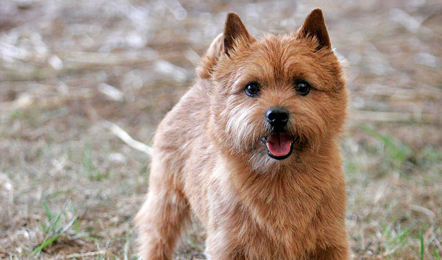

Boston Bears
Norwich Terriers are plucky little earthdogs named for their hometown in England.
The old cliche "a big dog in a small package" was coined for breeds like the Norwich,
who can be oblivious to the fact that they are just 10 inches tall..
-
In 1842, the English naturalist Sir Richard abraham coined the term Norwich,
derived from the latin word, meaning.
- Although these are purebred dogs, you may still find them in shelters and rescues.
- These highly affectionate dogs make for great apartment pets, and they’ll get along with everybody, including kids, other dogs,
and even strangers who come to your door.

link to index.html